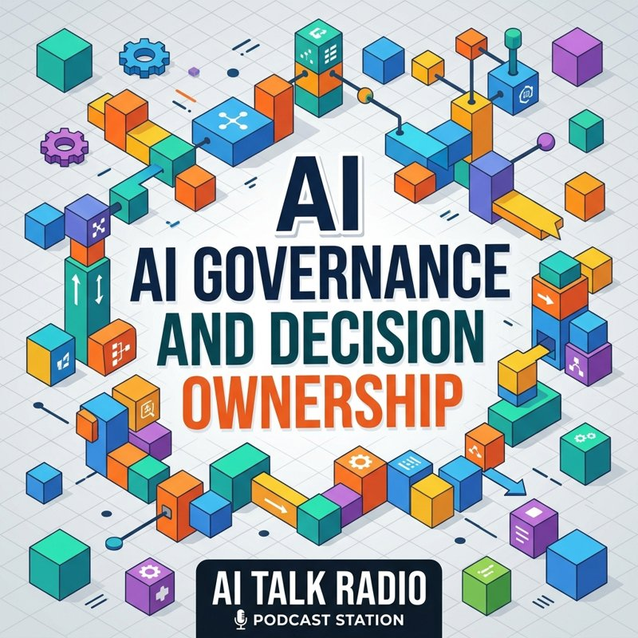

A short weekly audio program on who owns the decision when AI is involved, what your insurance covers, and what to ask next. Listen here, or read the transcript on each episode page.
Listen to the latest episode
This episode explores the critical shift toward human accountability in enterprise AI, focusing on new California regulations and insurance industry changes. Experts discuss the 'Decision Owner' framework in senior housing and healthcare, emphasizing that while machines can advise, humans must remain the ultimate gatekeepers.
AI Radio is an AI-generated audio program. The hosts and callers are synthetic voices, not real people, and the figures and claims are as stated in the program. Check them against primary sources before relying on them. This is general information, not legal, insurance, or compliance advice.